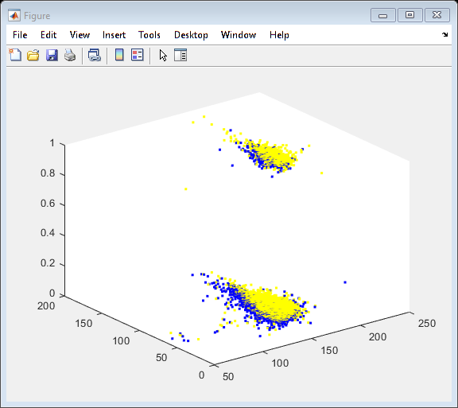
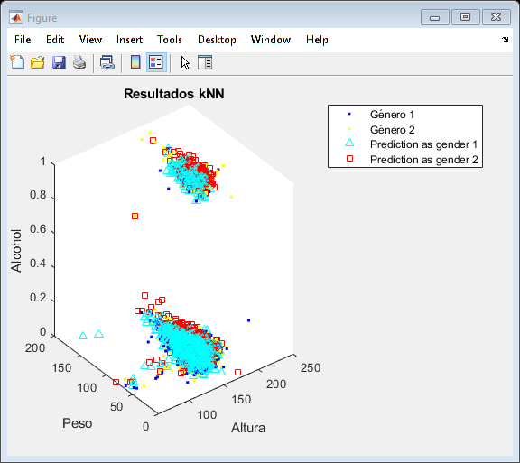

clear, clc
Para esta sección, se ha procurado simplificar la base de datos a sus datos más representativos, dígase los valores de frontera, pues dan una mejor distinción entre valores intermedios, pues en el centro de cúmulos queda más que claro la clasificación de un valor, para llevar a cabo este proceso se lleva a cabo el siguiente algoritmo.

tic % Inicia el conteo del tiempo % Importa los datos train_set = readtable("Train set.xlsx"); test_set = readtable("Test set.xlsx"); X = train_set; Y = test_set; % g1 = X(X.gender==1, :); % g2 = X(X.gender==2, :); % Grafica los datos % plot3(g1.height, g1.weight, g1.alco, '.b') % hold on % plot3(g2.height, g2.weight, g2.alco, '.y') posZ = randi(length(X.height)) Z = []; Z = [Z; X(posZ, :)]; Znt = 0; retry = 1 while (retry ~= 0) kZ = 1; indexZ = randperm(length(X.height)); retry = 0; for posZ = indexZ posZ; dZ = (([X.height(posZ), X.weight(posZ), X.alco(posZ)] - [Z.height(:) Z.weight(:) Z.alco(:)]).^2); dZ = sqrt(dZ(:,1)+dZ(:,2)+dZ(:,3)); [dis, pos] = mink(dZ, kZ); prueba = mode(Z.gender(pos)); if X.gender(posZ) == prueba else Z = [Z; X(posZ, :)]; X(posZ, :) = []; retry = retry + 1; break; end end end toc
posZ =
63243
retry =
1
Elapsed time is 452.882134 seconds.
g1Z = Z(Z.gender==1, :); g2Z = Z(Z.gender==2, :); % Grafica los datos plot3(g1Z.height, g1Z.weight, g1Z.alco, '.b') hold on plot3(g2Z.height, g2Z.weight, g2Z.alco, '.y')
tic % Se solicita la cantidad de vecinos a considerar. % k = input('Introduzca la cantidad de vecinos: '); k=1; nTrainData = length(X.height) %size(train_set); ValReales = Y.gender; % DistType = input('Seleccione el tipo de distancia \n (1) Manhattan, (2) Euclindeana, (3) Mahalanobis: '); %DistType = 2; for i = 1:length(Y.height) i; %Rep = repmat([test_set.height(i), test_set.weight(i), test_set.alco(i)], nTrainData, 1); d = (([Y.height(i), Y.weight(i), Y.alco(i)] - [Z.height(:) Z.weight(:) Z.alco(:)]).^2); d = sqrt(d(:,1)+d(:,2)+d(:,3)); [dis, pos] = mink(d, k); Y.gender(i) = mode(Z.gender(pos)); end
nTrainData =
35882
Se grafica el resultado
p1 = Y(Y.gender==1, :); p2 = Y(Y.gender==2, :); plot3(p1.height, p1.weight, p1.alco, 'c^') plot3(p2.height, p2.weight, p2.alco, 'rs') legend('Género 1','Género 2','Prediction as gender 1','Prediction as gender 2') title('Resultados kNN') xlabel('Altura') ylabel('Peso') zlabel('Alcohol') % Calcula la accuracy/Precisión Accuracy = sum(ValReales==Y.gender)/length(Y.gender) toc % Termina conteo de tiempo
Accuracy =
0.5398
Elapsed time is 18.841301 seconds.
